running tests until one comes back significant

A budgeted, seeded specification search that fires at the model space until p <= 0.05 lands somewhere, then writes the paper.
The Texas sharpshooter fires at the side of a barn all night, walks over in the morning, and paints a target around the densest cluster of holes. texanshootR is that loop, made reproducible. Every shoot() call opens a wall-clock budget and flails across predictor subsets, transformations, interactions, outlier exclusions, subgroup splits, and — once the budget runs low — model families and derived metrics, biasing toward whatever is almost significant and abandoning specs that go cold. Either a hit lands on the wall or it does not. When one does, the package writes the manuscript around it.
library(texanshootR)
run <- shoot(mtcars)
print(run) # the shooter's face, the emotional arc, then the formula and p-value
summary(run) # counts per search axisshoot() is deterministic given a seed. The seed, R version, package version, and a hash of the full search trace are recorded on the returned tx_run, so any saved run replays exactly. Unpublishable data is now the shooter’s problem, not yours.
The search engine
Seven model families, each with a native fitter and no soft dependency on mgcv, lme4, or lavaan — the heavy ones are written by hand in C++ via Rcpp:
-
lm— ordinary least squares via.lm.fit() -
cor— bivariate Pearson / Spearman / Kendall -
glm— Gaussian / binomial / Poisson / Gamma with link choices -
wls— two-stage feasible weighted least squares -
gam— penalised B-spline regression with GCV smoothing selection -
glmm— Gaussian random-intercept LMM by profile likelihood -
sem— single-mediator path model with a Sobel test for the indirect effect
A family selector attaches a fitter to each spec from the run’s escalation state and the outcome shape: lm early, glm under pressure, and the occasional forced coercion (binomial on a continuous outcome, Poisson on a rounded one) when the shooter is chasing the next decimal. Every fitter returns the same result shape, so the selector, the highlight chooser, and the run record never branch on family.
The publication chain
A tx_run that clears p <= 0.05 is shippable, and the first shippable run opens a six-stage publication chain, redeemed in order:
abstract(run) # one-paragraph deadpan summary
manuscript(run) # IMRaD draft; Methods match the winning spec
presentation(run) # 8-slide deck; residual plot on slide 7
reviewer_response(run) # opens "we thank the reviewer for their thoughtful comments"
graphical_abstract(run) # the figure your PI will retweet
funding(run) # the next grant, citing the just-shipped findingFinishing the chain through your unlocked prefix collects a length-bonus on top of the per-stage XP. Firing a fresh shoot() mid-chain forfeits the bonus and keeps partial XP. Locked stages, expired windows, the wrong run, and out-of-order calls all signal a structured tx_chain_error with a reason field your tests can branch on. Each generator writes to tempdir() and returns the file path invisibly; override with output_dir = or options(texanshootR.output_dir = ...).
Career and unlocks
Redeemed stages award XP. Cumulative XP grows the chain prefix you can redeem, and your career tier is a label derived from that prefix. The tier is not decoration: it gates which model families enter the search pool.
| Chain length | New stage | XP needed | Career tier | Families added |
|---|---|---|---|---|
| 1 | abstract() |
0 | Junior Researcher | lm |
| 2 | manuscript() |
5 | Postdoc |
cor, glm
|
| 3 | presentation() |
15 | Postdoc | — |
| 4 | reviewer_response() |
30 | Senior Scientist |
wls, gam
|
| 5 | graphical_abstract() |
55 | Senior Scientist | — |
| 6 | funding() |
90 | PI |
glmm, sem
|
career() # tier, runs, favourite method, opaque scores
achievements() # 20 unlockable badges; hidden ones show as ???
wardrobe() # cosmetic slots (hat, badge, cloak, poncho, lanyard)
progress() # HUD: chain length, XP, next unlock, live chain window
run_log() # tibble of every run on this profileThe message pack
The terminal interface is driven by a YAML message registry under inst/messages/ with 1,257 entries across phases (blip, loading, promotion, reviewer, derived_escalation, state_transition, banner, event / event_consequence). Each message carries a fallacy tag from vocab_tags (p_hacking, harking, subgroup_fishing, causal_overreach, …), a rarity weight, an optional mascot_state_affinity, and an optional model_family_affinity so the GAM-specific line only fires when the run picked a GAM. Every family has dedicated coverage.
validate_messages() # schema + tag-vocabulary check
vocab_tags # canonical fallacy and thematic tags
vocab_phases # canonical trigger phases
vocab_mascot_states # composed / uncertain / anxious / desperate / resolved
vocab_careers # tier ladderThe schema lives in MESSAGE_SCHEMA.md. Adding a message is a YAML edit and a re-run of validate_messages().
Persistent state
Your researcher profile persists under tools::R_user_dir("texanshootR", "data") as flat YAML: human-readable, version-controllable, and yours to carry between institutions. The first interactive save prompts before writing anything to disk. Opt out with options(texanshootR.save_enabled = FALSE) and the package runs stateless — every call independent, progression inert at Junior Researcher, with no path forward from there.
Reset
A new institution, a co-author dispute, an opportune hard-drive failure, or the simple urge to start clean:
reset_career(force = TRUE)
reset_achievements(force = TRUE)
reset_wardrobe(force = TRUE)
reset_all(force = TRUE)Installation
install.packages("pak")
pak::pak("gcol33/texanshootR")The package compiles a small C++ backend (penalised least squares for gam, profile-likelihood mixed model for glmm) on first install.
Further reading
Brodeur, A., Cook, N. and Heyes, A. (2020). Methods Matter: P-Hacking and Publication Bias in Causal Analysis in Economics. American Economic Review 110(11): 3634–60. https://doi.org/10.1257/aer.20190687
texanshootR is our humble contribution to a thriving field.
Support
“Where is the money, Lebowski?”
— The Big Lebowski
I’m a PhD student who builds R packages in my free time, on the principle that the tools of dubious research should be free and open. I started these for my own questionable p-values, and figured the field deserved the same head start.
If this package saved you some time (or pre-empted a fit of overfitting), buying me a coffee is a nice way to say thanks.
License
MIT © Gilles Colling. See LICENSE.